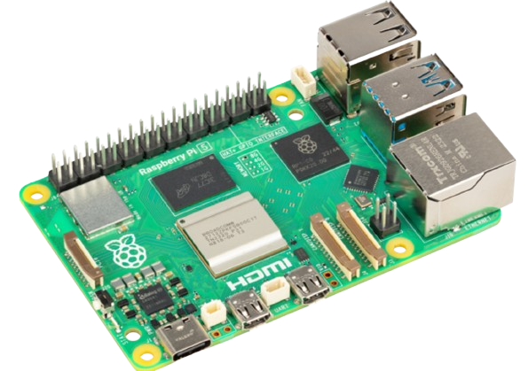

In today's modern world, computers have become an integral part of our daily lives. We rely on them for a wide range of tasks, from professional work and managing businesses to personal activities like learning new skills or hobbies, such as cooking. Given their ubiquity, it's essential
to understand the various types of computers and their specific purposes, as this knowledge allows us to use them effectively in different situations.
Computers can be categorized based on size, functionality, computing style, and processing speed. For example, server computers serve entirely different purposes compared to microcomputers. A server computer, often as large as a stack of three people, is designed to handle vast amounts of data and support multiple users simultaneously. In contrast, a microcomputer, compact enough to fit in the
palm of your hand, is tailored for individual use. Understanding these distinctions not only clears up confusion but also helps us make informed decisions about which type of computer suits our needs best (Dang et al., 2014).
To sum it up, as technology continues to evolve, knowing the differences between computer types becomes increasingly important. This understanding enables us to harness their capabilities effectively,
empowering us to stay productive, informed, and adaptable in a tech- driven world.
In this portfolio, we are going to be talking about Supercomputers, Mainframe Computers, Mini Computers, Server, Workstations, and Micro Computers.
| Type | Name/Brand | CPU | Memory | Processing Speed | Calculating Power | Working Principle | Energy Consumption | Field of Use |
|---|---|---|---|---|---|---|---|---|
| Super Computer | HPE Cray, Dell, Fujitsu, ATOS | High Clock Frequency and multi-core processing | Terabytes of RAM, Very High Performance and Bandwidth Memory | Up to 100+ PFLOPS | Petaflop to Exaflop | Parallel Processing | Significant Energy Consumption | AI, Machine Learning, scientific research, weather forecasting, simulations |
| Mainframe Computers | IBM, Fujitsu, UNIVAC | Multiple CPUs, generally lower clock speed and multi-core processing | 512 GB to 40 TB of RAM, High Performance and Bandwidth | Very Fast (in MIPS) | Billions of Calculations and Transactions in Real-Time | CPUs, SAPs, and I/Os | Energy-efficient, less than cloud computing | Transaction Processing, Data Processing, Large Scale Operations, Scientific and Engineering Computations |
| Mini Computers | Texas Instruments, IBM, DEC | Moderate Speed Multi-core CPUs | Couple Gigabytes to Terabytes of RAM | Moderate | A decent amount of MIPS | Multi-tasking for smaller workloads | Moderate | Business, Academe, General Purpose |
| Server | HPE, Dell EMC, HP | Moderate Speed High-Performance Processors | Terabytes to Petabytes | High | High | Acts as a Hub or Service to other computers | Moderate to High (scalable) | Web Hosting, Cloud Computing, Database Management, File Storage |
| Workstations | Apple, Lenovo, Asus | Silicon processors, AMD Ryzen, ARM, Intel, High-End CPUs | 16 GB and above | Very Fast | Very Fast | Multi-use purposes for the industry | Generally 200 watts and above | General Computer Use, Video Editing, Web Browsing, Software Development, Engineering |
| Micro Computers | Raspberry Pi, ASUS, BeeLink, Odroid | Intel NUC or ARM Processors, Generally Multi-core | Up to 16 GB of RAM with 3200 MHz speed | Standard | Lower MIPS/FLOPS | Data Processing, Computer Assistant | Low energy consumption | Robotics, Education, Business Learning |
| Types of Computer | Sample Image | Description | Usage |
|---|---|---|---|
| Super Computer | The Computer displayed in the image is the El Capitan. It is based on the Lawrence Livermore National Laboratory in the USA and is known as the world’s fastest super computer. This Supercomputer utilizes AMD GPU and CPU technologies. | This computer is primarily used for scientific research particularly in the field of nuclear physics and weapon science. | |
| Mainframe Computer | The IBM z16 is a mainframe computer offered by IBM that uses on-chip AI inferencing and quantum safe technologies that allows it to support business functions and process sensitive data. | This computer is primarily used for supporting business operations, cloud computing, and data security. | |
| Mini Computer | DEC PDP-1 is a general-purpose computer produced by DEC during the late 1950s. It is typically lower price than a mainframe and is used for general purposes. | It is used to run programs with a higher-level language. It is also used for process control, scientific research and graphics applications. | |
| Server | A Dell PowerEdge Server is a server computer that is great for small businesses that want to host their own servers/hub. | This is a general-purpose Server Computer that can be used for storing data and general networking stuff with the added functionality of cryptographic verification, system lockdown and robust boot. | |
| Workstations |  |
The HP Z6 G4 Workstation PC is a workstation that is typically used by people who have typical demanding workload. | Can be used for multiple purposes such as graphic design, AutoCAD and software engineering. But can also be utilized for simpler tasks like word processing and more. |
| Micro Computers |  | The Raspberry PI is a microcomputer that can do most tasks that a workstation PC can do at a lighter scale. You can install custom software and operating systems and run it as is. Theres also some applications with this on robotics. | This can be used for most PC tasks, but on a more portable scale. You can also use this as a controller for robotic parts and simple embedded systems. |
| Category | Processing speed | Memory Capacity | Power Consumption | Usage |
|---|---|---|---|---|
| Mini Computer | Moderate | Moderate | Low | Home use, small office tasks, media centers |
| Micro Computer | High | High | Moderate | Personal computing, office work, educational purposes, If micro- sized then can be applied for robotics. |
| Workstation | Very High | Very High | High | Professional applications, graphic design, engineering, scientific research |
| Server | High to Very High | Very High | High to Very High | Hosting websites, managing databases, enterprise applications |
References:
Lutkevich, B. (2022, March 11). supercomputer. WhatIs. https://www.techtarget.com/whatis/definition/supercomputer#:~:text=Processing%20pow er%20is%20the%20main,gigaflops%20to%20tens%20of%20teraflops.
Ibm. (2024, October 8). Mainframe. IBM. https://www.ibm.com/topics/mainframe
TOP500 | TOP500. (n.d.). https://top500.org/lists/top500/
Dang, H., Guo, L., & Shao, D. (2014, November). Analysis on Purchase on Selection of Computer Hardware and System Maintenance. In 2014 International Conference on Education Technology and Social Science (pp. 115-119). Atlantis Press.
Techopedia. (2017). Various entries on computer types. Retrieved from https://www.techopedia.com
Britannica. (2024). Supercomputer. Encyclopedia Britannica. Retrieved from https://www.britannica.com/technology/supercomputer
IBM. (2024). What is a mainframe? IBM. Retrieved from https://www.ibm.com/topics/mainframe
Britannica. (2024). Microcomputer. Encyclopedia Britannica. Retrieved from https://www.britannica.com/technology/microcomputer
Wikipedia contributors. (2024, November 21). El Capitan (supercomputer). Wikipedia. https://en.wikipedia.org/wiki/El_Capitan_(supercomputer)